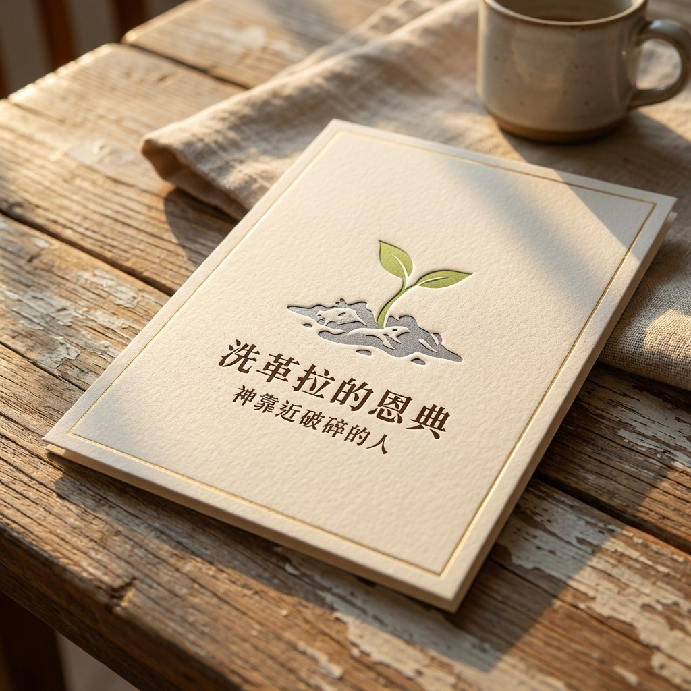

1. 報告前言：洗革拉時刻的戰略意義
在生命的地圖上，「洗革拉」不僅是一個地理坐標，它代表著每個人生命中那場「徹底失去」的戰略轉折點。當大衛回到洗革拉，面對的是焚毀的家園、被擄的妻兒，以及身邊六百名勇士憤怒到想用石頭打死他的絕境。這是一個事業、家庭與自我認同全面崩解的時刻，我們稱之為「洗革拉時刻」。
作為一名牧者與生命建築師，我深知現代人同樣在經歷這樣的灰燼。無論是財務的崩盤、健康的喪失，或是人際關係的背叛，這其實是上帝對生命「主權」的一次深度重整。在絕境中尋求神的同在，其戰略意義在於將生命從「自我的防衛」轉向「主權的交託」。本報告將深度剖析：當我們在廢墟中選擇仰望，如何能將原罪的苦毒轉化為重生的力量，讓破碎的生命在神的手中重新定錨。
2. 核心論點卡片 (ASCII Argument Card)
【核心主權】 神靠近破碎的人：在灰燼中確立上帝的第一優先
【轉化技術】 [自卑求同在] -> [除去悲賤] -> [主權交託]
【戰略路徑】
- 靜默：停止人脈運作與邏輯盤算。
- 求問：求取「以弗得」的回應與印證。
- 執行：在「追得上、救得回」的應許中前進。
【重生樣式】
| 不爭競 | -----> | 不顯苦 | -----> | 耐心等候 |

3. 生命定位的重塑：神眼中的「合神心意」
當我們對比掃羅與大衛，我們看到的不是完美的競爭，而是「生命主權」的根本差異。掃羅代表的是一種依靠自我的「窩囊生命」，當錯誤發生時，他第一時間為自己辯護、推諉責任，他的一生都在為了維護那個脆弱的君王寶座而掙扎。
然而，上帝評價大衛是「合神心意的人」。這並非因為大衛不犯錯，而是大衛具備「悔改」而非「辯護」的靈。當他跌倒、當他失去一切，他選擇的是回轉向神。這種「原罪的洗滌」建立在一種純粹的連結上：凡事遵行神的旨意，而非追求事物的多寡。一個合神心意的人，其生命的核心戰略是：不論處境如何，耶和華永遠是他的神。在洗革拉的混亂中，大衛「心裡堅固」的來源，正是因為他將上帝放在了生命的第一優先

4. 洗革拉的灰燼：當你一生努力在一夕之間失去

想像一下，你引以為傲的身份、奮鬥半生的資產，被上帝一聲不響地抽走。素材中提到的那位三十二歲的音樂博士，正值人生高峰，卻在一天內被診斷出鼻咽癌第四期。醫生的判斷如同死刑宣告：六次化療、八次放療，將摧毀他的聽力、味覺與嗅覺。
對於一位音樂家而言，失去聽力就是看見自己的洗革拉化為灰燼。在這種時刻，人最容易問的是「Why me?」。但從牧養的角度看，這其實是上帝在詢問：「你是否願意在失去感官後，依然信靠我？」這是一個「Why not me」的靈性辯證。當上帝抽走你最引以為傲的東西，是為了讓你看見祂自己。那位音樂家在極大的絕望中，因為選擇不再懼怕、不再執著於失去的才華，而在上帝面前找回了另一種盼望。這就是洗革拉的功課：上帝允許灰燼，是為了篩選出那些「火燒不掉」的永恆價值。
5. 拒絕「受害者」偽裝：不顯苦、不爭競的優雅樣式
在服事中，我常觀察到一種「悲賤」的負面表現——這是一種極其隱微的屬靈爭競。有些人刻意表現得很苦、很委屈，試圖透過展示傷痕來索取他人的同情，或是藉此偷取上帝的榮耀，這在本質上是拒絕了神的主權。
我想起我的弟兄「王弟兄」，他身患肝癌，左肝有七顆腫瘤，右肝完全衰竭。在生理極度疼痛、甚至頭痛到要裂開的時刻，他依然不斷地喊著「阿門」。老實說，那種頻繁的阿門有時甚至顯得「干擾」，但那卻是他與上帝緊緊連結的生命印記。他在苦難中不顯苦，甚至在臨終前要求的也是在敬拜中離去。
真正的信心是「心裡堅固」，這需要在內室中進行操練，而不是在人群中進行「苦難博弈」。當我們拒絕落入受害者的偽裝，拒絕那種「競爭誰比較慘」的心理機制時，我們才能展現出大衛式的優雅。大衛雖然焦急，但他沒有向跟隨者訴苦，而是直接向神尋求安息。這種「不顯苦」的戰略深度，源於對上帝掌控全貌的絕對信任。

6. 交託的技術：亞比亞他的以弗得與求問的程序
交託不是一種模糊的感覺，而是一套嚴謹的技術。大衛在洗革拉的第一反應是叫祭司亞比亞他拿過「以弗得」，這就是「先求問、後行動」的技術流程。
這讓我想起自己爭取中原大學教職的「第18名奇蹟」。在競爭激烈的學術圈，我的背景極其平凡，沒有海外名校光環。在初步評選中，我僅排在第18名。在人的眼光看來，這簡直是必敗的死刑。但我學習大衛的樣式，停止一切「人脈運作」，單單回到神面前求問。結果，在最終的面談會議上，上帝親自作工，彷彿「洗腦」了評審委員會，讓他們跳過前面的17人，決定錄取我。
這就是 「以弗得式」的決策流程：
- 屏蔽人為噪音： 停止人的盤算與人際關係的鑽營。
- 尋求聖言印證： 如同大衛求問「可以追追得上嗎？」我們必須在神的話語中尋找確據（如羅馬書 8:31：神若幫助我們，誰能抵擋我們呢？）。
- 徹底執行的順服： 當上帝給出「可以追」的回應，即便是看起來不可能的第18名，也要帶著信心前進。
我們不需要看見全貌，我們只需要知道「誰掌握全貌」。

7. 綜合論述與時間表 (逐字稿生命智慧整理)
| 綜合論述與生命智慧 |
|---|
| 第三日的核心試煉： 大衛回到洗革拉，發現一切化為烏有。這是一個「失去」的戰略點，測試誰是生命中真正的 Priority。 |
| 感官與身份的剝離： 分析32歲音樂博士的癌症見證。上帝抽走才華與身份，是為了讓人在「無所有」中遇見神。 |
| 內在堅固的實踐： 王弟兄肝癌末期的「阿門」。即便肉體毀壞，內心卻因信靠神而顯得無比堅強，不落入「顯苦」的試探。 |
| 第18名的神蹟： 分享教職錄取經歷。證明當神要開門時，世界的排名（人脈與實力）都必須讓路，關鍵在於起初的求問。 |
| 萬事互相效力： 實踐羅馬書 8:28。神知道亞馬利人的去向，也知道那個領路的少年人何時出現。上帝掌握全貌，信靠的人不著急。 |
8. 結語：萬事互相效力與愛神的人
在本篇分析報告的最後，我要分享一個關於「上帝調度全貌」的極致見證。我能進入中原大學，背後竟源於林志民院長的一通電話。當時林院長遠在馬來西亞，正準備上台分享前，在後台禱告時，上帝清楚地給他一個意念，叫他立刻打電話給他的助理，指名要聘用我。
這就是「愛神的人，萬事互相效力」。上帝知道洗革拉的灰燼何時熄滅，也知道在哪一個轉角預備了關鍵的電話。我們往往只看到地圖的一角，而上帝掌握著全幅的卷軸。我要對每一位正處於破碎中的朋友說：請停止你的焦急。上帝知道如何調度資源，祂知道如何讓一個18名的人站上講台。
信靠的人必不著急。上帝正看著你洗革拉的廢墟，準備為你開啟那扇無人能關的恩典之門。

9. 結束代禱
親愛的天父：
我們帶著一顆戰戰兢兢卻又充滿盼望的心來到祢施恩寶座前。主啊，為著每一位正看著手中灰燼、正處於「洗革拉時刻」的人禱告。求祢那堅固大衛的靈，此刻就進入他們的內心。
主啊，除去我們生命中那種想要與人爭競、想要表現「悲賤」以博取同情的負面習性。求祢教導我們「不顯苦」的樣式，讓我們看見王弟兄那種超越肉體痛苦的敬拜，看見那種即便失去感官依然要讚美祢的生命力。
求祢教導我們求問的藝術，讓我們在面對人生的抉擇與絕境時，第一時間尋求祢的「以弗得」，而非人脈的運作。主啊，我們宣告，祢掌握全貌！即便是第18名的劣勢，即便是在馬來西亞後台的一通電話，都在祢的調度之中。求主幫助我們在等候中站立得住，在破碎中看見祢的同在。
奉主耶穌基督聖名求，阿們。